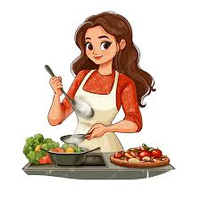
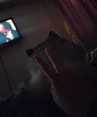

Hobbies
🍳 Cocinar
Me encanta experimentar en la cocina. Intento preparar nuevas recetas cada semana, desde postres hasta mi plato favorito. Cocinar me relaja y me permite ser creativa.
🎧 Escuchar música

La música es una parte muy importante de mi día. Escucho de todo un poco. Siempre tengo una playlist para cada momento.
🎬 Ver películas
Me gusta disfrutar de una buena película en mis ratos libres. Mis géneros favoritos son el suspenso, drama y las películas de fantasía También disfruto ver series .